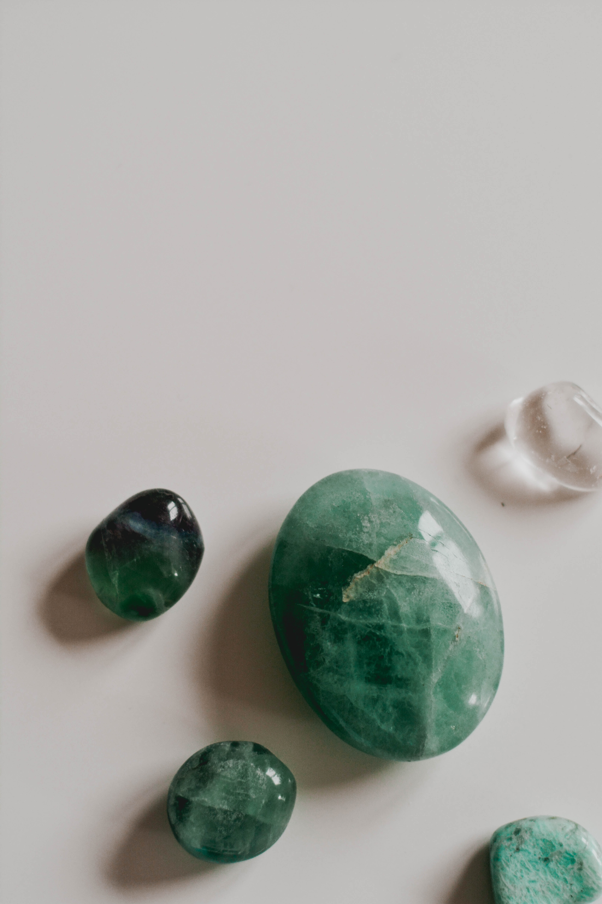
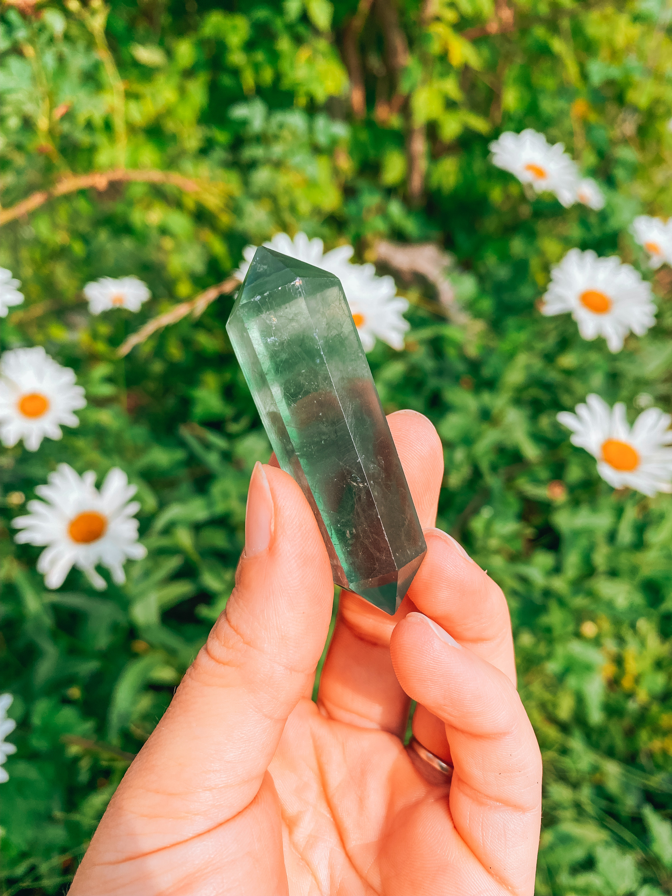

Crystals

Amethyst is a powerful and protective stone. It guards against psychic attack, transmuting the energy into love and protecting the wearer from all types of harm, including geopathic or electromagnetic stress and ill wishes from others. Amethyst is a natural tranquiliser, it relieves stress and strain, soothes irritability, balances mood swings, dispels anger, rage, fear and anxiety.

Aventurine is a stone of prosperity. It reinforces leadership qualities and decisiveness. Promotes compassion and empathy. Encourages perseverance. Aventurine relieves stammers and severe neuroses. It stabilises one’s state of mind, stimulates perception and enhances creativity.

Fluorite cleanses and stabilises the aura. It absorbs and neutralises negative energy and stress. An excellent learning aid, Fluorite increases our powers of concentration, self-confidence and helps us in decision-making. It encourages positivity, balances the energies, and improves balance and coordination, both physically and mentally.

Rose Quartz purifies and opens the heart at all levels to promote love, self-love, friendship, deep inner healing and feelings of peace. Calming and reassuring, it helps to comfort in times of grief. Rose Quartz dispels negativity and protects against environmental pollution, replacing it with loving vibes.